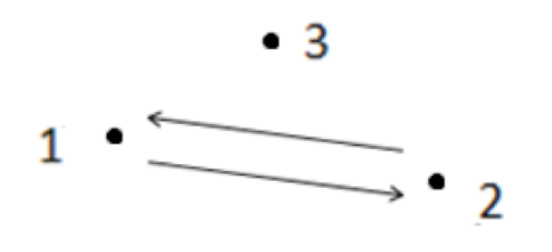
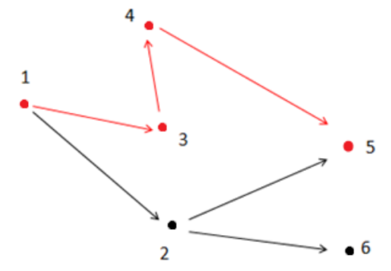

在有向图 $G$ 中，每条边的长度均为 $1$，现给定起点和终点，请你在图中找一条从起点到终点的路径，该路径满足以下条件：
注意：图 $G$ 中可能存在重边和自环，题目保证终点没有出边。
请你输出符合条件的路径的长度。
第一行有两个用一个空格隔开的整数 $n$ 和 $m$，表示图有 $n$ 个点和 $m$ 条边。
接下来的 $m$ 行每行 $2$ 个整数 $x、y$，之间用一个空格隔开，表示有一条边从点 $x$ 指向点 $y$。
最后一行有两个用一个空格隔开的整数 $s、t$，表示起点为 $s$，终点为 $t$。
输出只有一行，包含一个整数，表示满足题目描述的最短路径的长度。如果这样的路径不存在，输出 $-1$。
3 2 1 2 2 1 1 3
-1
6 6 1 2 1 3 2 6 2 5 4 5 3 4 1 5
3
【样例1说明】

如上图所示，箭头表示有向道路，圆点表示城市。起点 $1$ 与终点 $3$ 不连通，所以满足题目描述的路径不存在，故输出 $-1$。
【样例2说明】

如上图所示，满足条件的路径为 $1 \to 3 \to 4 \to 5$。注意点 $2$ 不能在答案路径中，因为点 $2$ 连了一条边到点 $6$，而点 $6$ 不与终点 $5$ 连通。
【数据说明】
对于30%的数据，$0< n≤10，0< m≤20$；
对于60%的数据，$0< n≤100，0< m≤2000$；
对于100%的数据，$0< n≤10,000，0< m≤200,000，0< x,y,s,t≤n，x≠t$。
 Comet OJ
Comet OJ